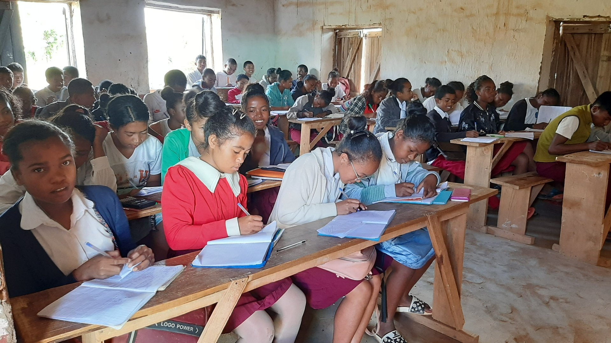
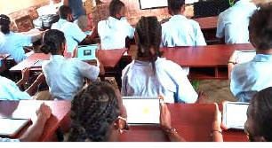
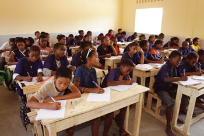
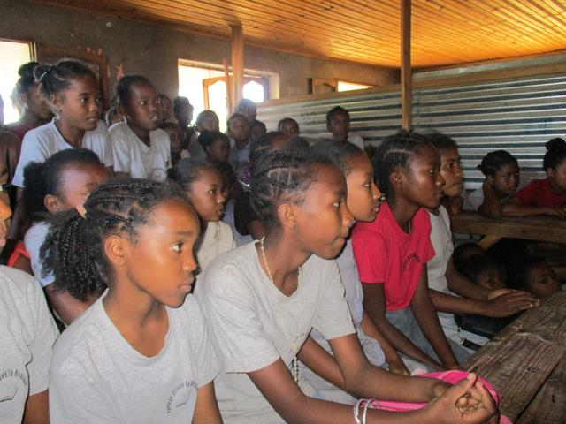
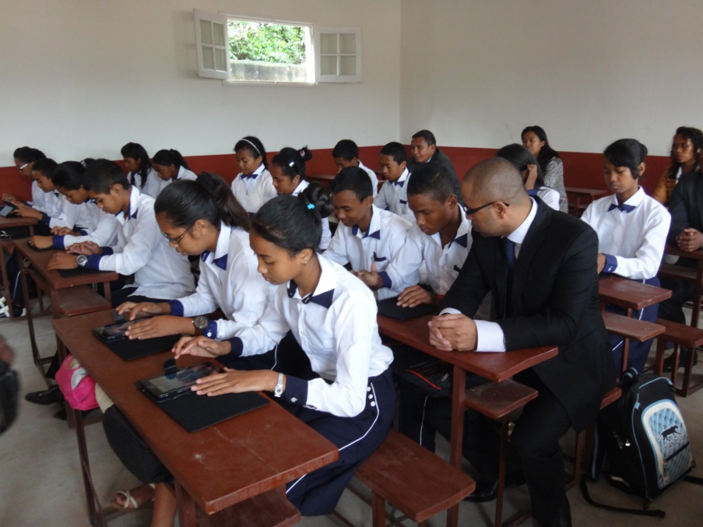

PROJET AXOKIT — STATION IA SCIENTIFIQUE (OFFLINE)
L’excellence pédagogique scientifique pour Madagascar
L’excellence pédagogique scientifique pour Madagascar
Le PRIVÉ "Aisé" finance : Il verse une contribution solidaire qui finance les ordinateurs des zones démunies. En retour, il reçoit l'usage gratuit de l'IA (Web ou Local).
Le PRIVÉ "Modeste" reçoit : S'il n'a ni PC ni Internet, il est assimilé au public et reçoit gratuitement la dotation matérielle et l'IA en mode local.
Le PUBLIC reçoit : Les ordinateurs et l'IA gratuitement, sans aucun frais pour les familles.
L'ÉTAT : Pilote la souveraineté numérique du pays avec un budget de 0 Ar.




